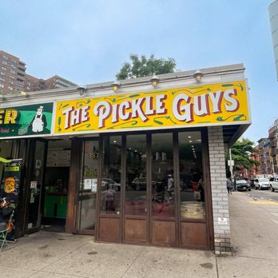
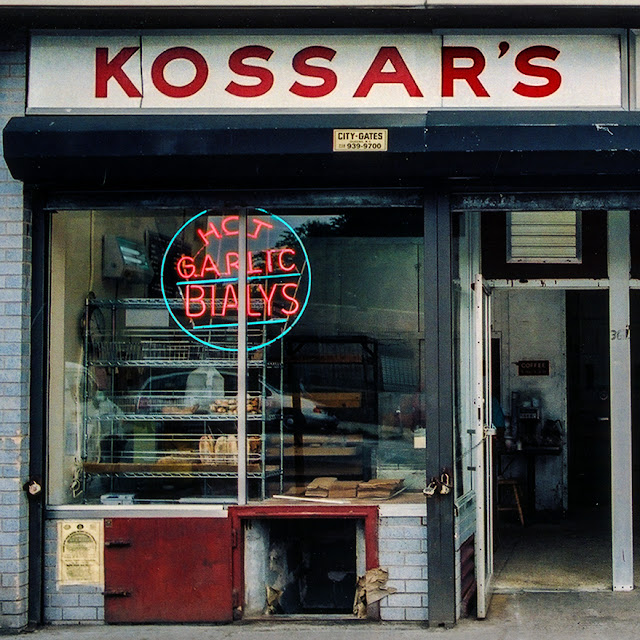

When I was younger my family and I created a Jewish Food Tour of the Lower East Side. We would continuously go back to the Lower East Side to go our favorite places and favorite jewish food landmarks in NYC. It became one of my favorite things. This is my list of favorite places that I visited.
The Pickle Guys
This is the first on my list because it is my absolute favorite to go in the city. As an olive and pickle loving Jew The Pickle Guys is a must visit. I would eat their food at every meal if I could. They sell the classics, including every kind of pickle, olive and union. They also sell other pickle foods like pineapple. One of the best things I have tried there is a spicy pickle which was incredible. It is the kind of place I want to walk into and just explore. The Pickle Guys started in 1910 as a push cart on the lower east side and is the only pickles store left on Essex Street (a central street on the Lower East side). Additionally, if you go before passover they sell fresh homemade horseradish, which is something I definitely want to try.
Kossar's Bagels and Bialys
The Next stop on the tour is Kossar's Bagels and Bialys. They have been making bialys since 1936. Bialys are a cousin to bagels, they are softer and normally have onions and poppy seeds in the center "We like to think of bialys as loving, kind of awkward cousins to bagels,"(Kossars.com). The store also sells bagels and other jewish staples but they are known for their bialys. These bialys are delicious, fresh, warm and a great addition to a day spent eating food in the city or even just as a quick stop for breakfast.
Doughnut Plant
Next is another one of my favorite places on the Lower East Side. The first time I did this tour I was not vegan but I was dairy free so this was one of my most exciting stops because they had a dairy free treat. Doughnut Plant is a delicious donut shop and bakery with incredible treats and coffee. They have vegan doughnuts that are so good. Yes I am a sucker for a doughnut but I mean who isn’t. It is not an explicitly Jewish food but is on the same street as The Pickle Guys and Kossar's and it is a great addition to the food tour. The bakery was established by Mark Isreal in 1994 and has a kosher certification. They sell both sourdough and cake donuts, and have an array of interesting flavors. Some of their flavors include classics like, chocolate and vanilla, they also have creme brulee, blueberry and peanut butter and jelly.
Yonah Schimmel Knish Bakery
Another great place to stop at is Yonah Schimmel Knish Bakery. This was another frequent stop for my family. Yonah was a Romanian rabbi who opened a push cart with his wife selling knishes . The storefront opened in 1910 and became very popular. Knishes are filled with mashed potatoes and can include cabbage, kasha or spinach. Normally I don't like any kind of mashed up potato (I know unpopular opinion), but these knishes were so good, they were warm, had great flavor, and with a little mustard they were just delicious. They also sell Egg creams which were another staple in the lower east side during the 1900s. They are located at 137 East Houston street which is the same street as Katz’s Deli and Russ and Daughters. "Real knishes are round, not square and never fried."(http://www.knishery.com/about/)
Russ and daughters
One of the last stops is of course another place you can get bagels. Russ and Daughters is an iconic bagel location and definitely worth stopping at. I mean, you can’t go wrong with bagels, lox, and cream cheese. In 1904 Joel russ, a jewish immigrant from Poland started a pushcart selling herring in the Lower East Side. Then in 1914 he opened a shop on Orchard Street. In 1920 they moved to the current location 179 East Houston St. and eventually in 1933 they named the business “Russ and Daughters”. It is still owned by the cousins and relatives as the same original family and continues to sell authentic bagels and everything you could possibly need with your bagel. Importantly, they make it clear on the website’s about me page, Russ and Daughters is not a deli, it is an appetizing store. The difference is because of kashrut laws in the early nineteen hundreds, two different kinds of stores for jews arose. One, the delicatessen which sold meat products and the second, the appetizing stores which sold fish and dairy. Russ and daughters is an appetizing store selling dairy, fish and everything you need for a perfect bagel.
Katz's Deli
Next of course is Katz's Deli. This is another iconic stop on the Jewish food tour. It is a block away from the Russ and Daughters on Houston street and the ultimate Jewish Deli. They are famous for their overflowing sandwiches and deli meats. Specifically their Pastrami sandwich. There is always a long line out the door of people waiting to get inside, experience the environment of a traditional deli and get a taste of their classic meats. Katz's was established in 1888 by Iceland brothers, it was later owned by Willy Katz in 1910 and the name changed to Kat'z Deli. Katz's was a place for people to conjugate and for the community to interact and socialize. It is definitely a worthwhile experience.